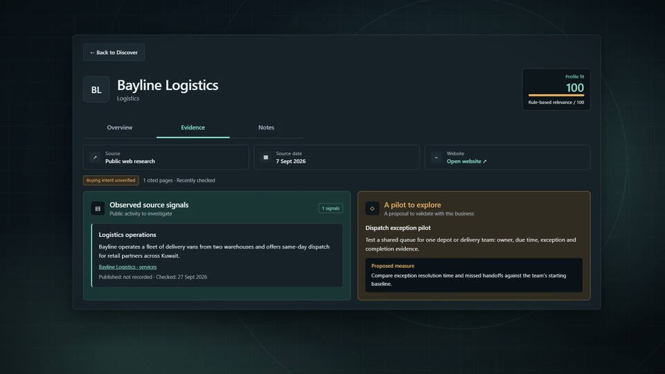
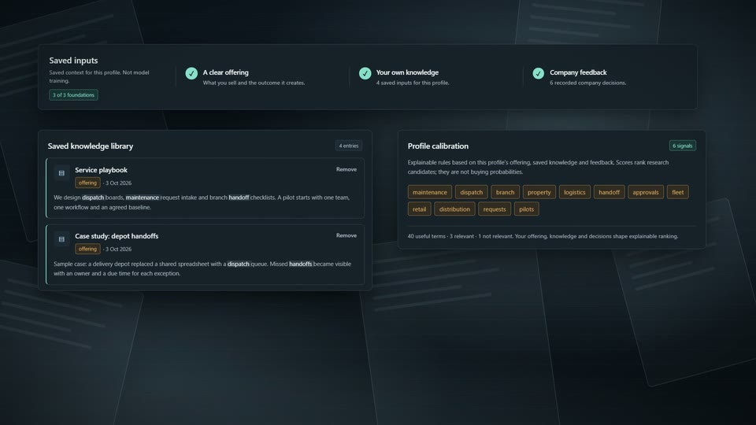
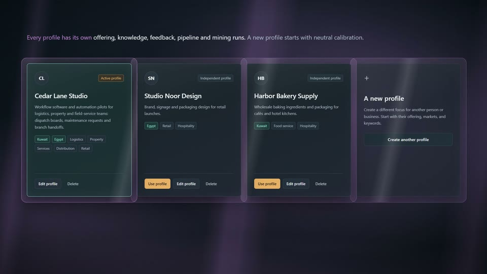
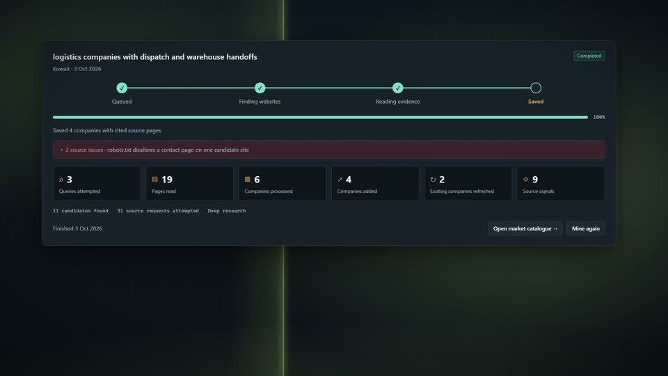
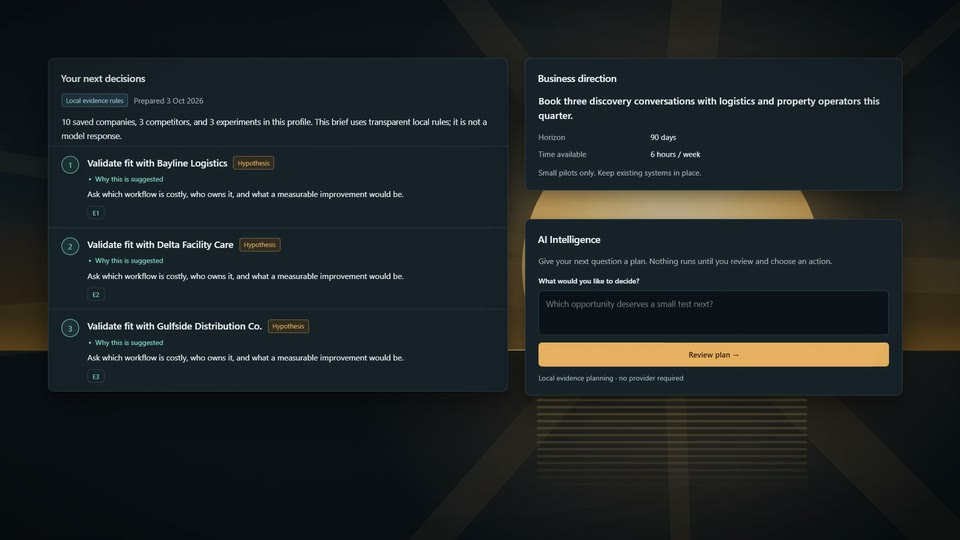
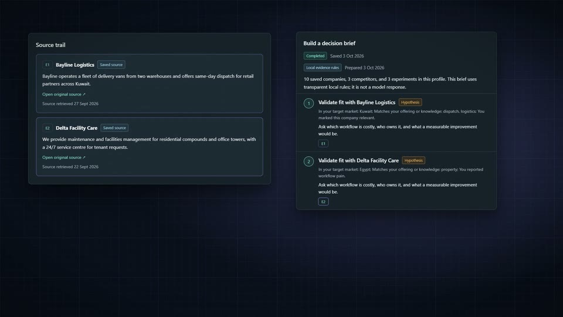
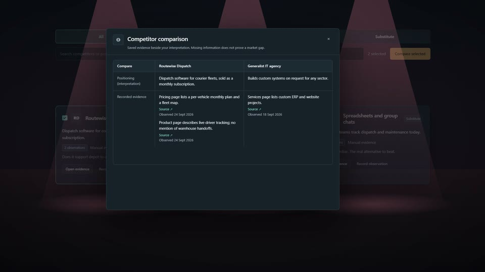
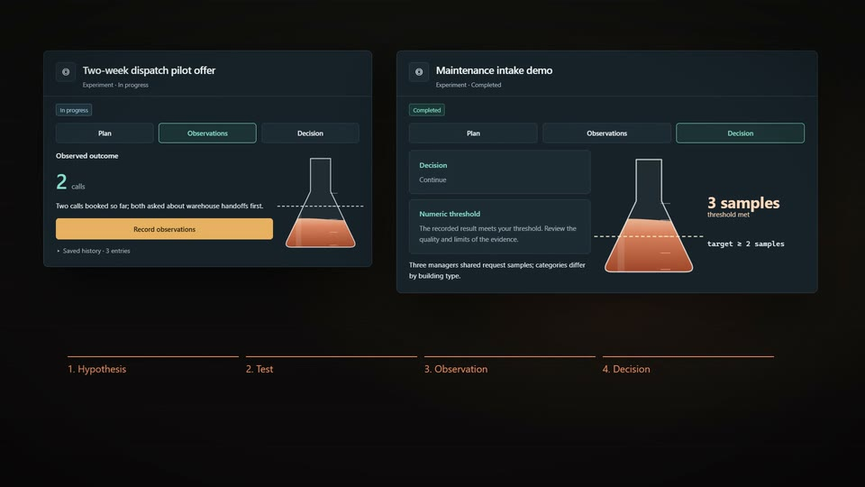
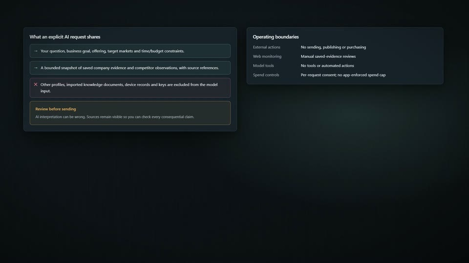
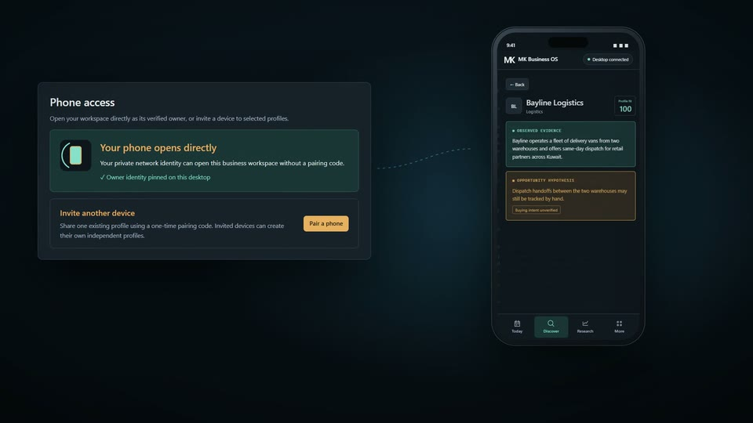

Ten worlds, one workspace.
The real MK Business OS 1.4 workspace lights its destinations one by one.
The real MK Business OS 1.4 workspace lights its destinations one by one.
A 150-second tour of MK Business OS 1.4, built from the app's real interface: discovery, knowledge, profiles, research, the decision desk, AI missions, competitors, experiments, AI and data controls, and phone access.
The real MK Business OS 1.4 workspace lights its destinations one by one.

Profile fit ranks companies; observed evidence and the hypothesis stay apart.

Documents, notes and decisions become explainable search terms for this profile.

Each profile keeps its own offering, knowledge, feedback and research.

A focused query runs a bounded public-web crawl, with its sources and issues on record.

Saved evidence and goals become a short list of next decisions.

A plan is previewed first; nothing runs until you choose to run it.

Direct, indirect and substitute rivals, compared on cited observations.

Each test has a measure, a target, a recorded result and a decision.

Optional Gemini or OpenAI, a write-only key, and a clear limit on what a request shares.

Owner or invited phone access over a private connection; business data stays on the desktop.